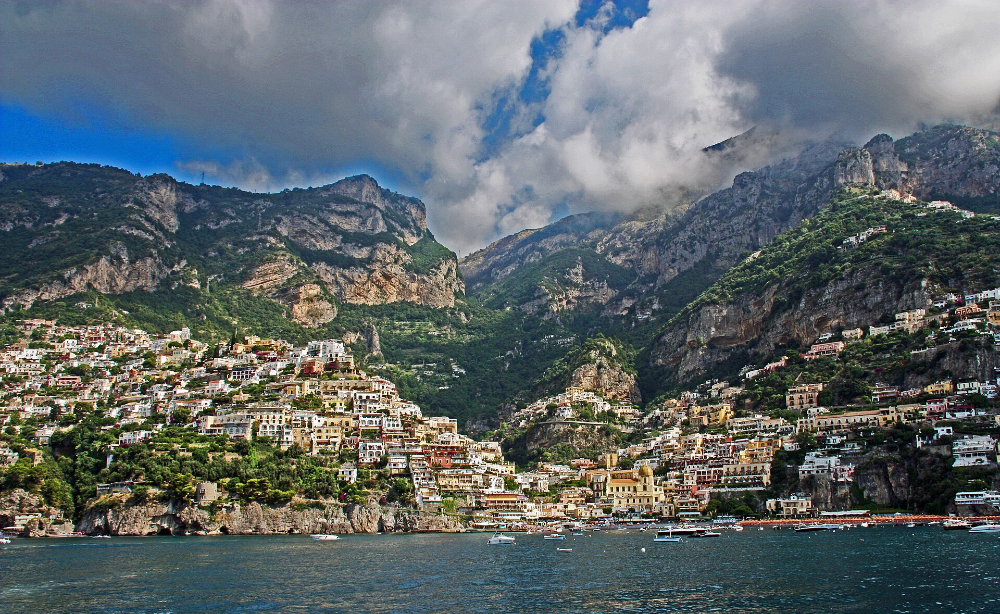
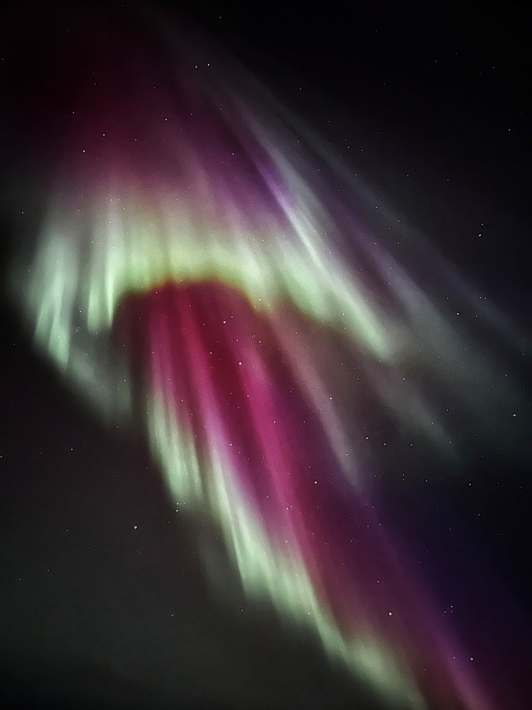
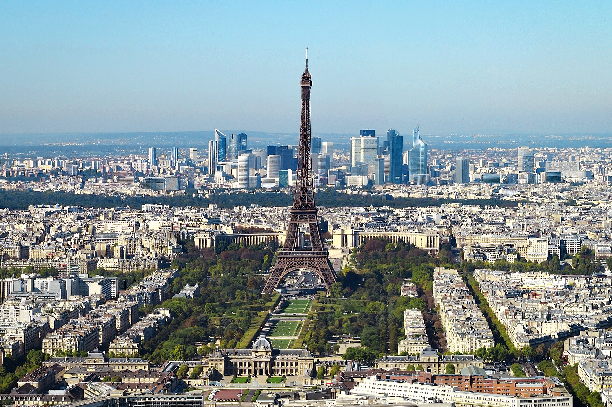

Überblick
Europa ist der westliche Teil der großen eurasischen Landmasse und – im üblichen Sieben-Kontinente-Modell – flächenmäßig der zweitkleinste Kontinent nach Australien/Ozeanien. Seine Landfläche liegt nach gängigen Schätzungen bei rund 10 Millionen Quadratkilometern; genaue Werte schwanken, weil die Ostgrenze zu Asien eine Konvention und keine scharfe Naturgrenze ist. Mit grob 740 bis 750 Millionen Menschen (Stand Mitte der 2020er Jahre, je nach Abgrenzung) beherbergt Europa einen mittleren, aber langfristig sinkenden Anteil der Weltbevölkerung. Dichte Besiedlung, lange Küsten und ein dichtes Flussnetz haben den Kontinent historisch zu einem intensiven Kontakt- und Austauschraum gemacht.
Geografisch wird Europa im Norden vom Nordpolarmeer, im Westen vom Atlantik und im Süden vom Mittelmeer begrenzt; im Osten und Südosten grenzt es an Asien. Die Trennung verläuft traditionell über Uralgebirge und Uralfluss, Kaspisches Meer, Kaukasus bzw. Schwarzmeerbecken und die türkischen Meerengen (Bosporus, Marmarameer, Dardanellen). Alternativen – etwa die Kuma-Manytsch-Niederung statt der Großen Kaukasuskette – verschieben, welche Gebiete als „europäisch“ gelten. Europa und Asien bilden physisch eine Einheit (Eurasien); die Kontinentbezeichnung Europa ist deshalb ebenso kulturhistorisch wie physisch-geografisch geprägt.
Politisch zählt man je nach Definition etwa 40 bis 50 souveräne Staaten (inkl. Kleinststaaten und teils transkontinentaler Länder wie Russland oder der Türkei). Die Europäische Union ist ein wichtiger Integrationsrahmen, deckt den Kontinent aber nicht vollständig ab. Sprachlich und kulturell ist Europa hoch differenziert: germanische, romanische, slawische und weitere Sprachfamilien, christliche Mehrheitskulturen neben muslimischen, jüdischen und säkularen Prägungen, sowie vielfältige regionale Identitäten. Für die Enzyklopädie-Struktur der Geografie dient dieser Artikel als Kontinent-Einstieg: physische Großräume, Klima und Bevölkerungsregionen im Überblick.
Physische Geografie

Großräume und Relief
Europa lässt sich grob in mehrere physische Großräume gliedern, die von Nord nach Süd bzw. von West nach Ost ineinander übergehen. Im äußersten Nordwesten und Norden prägen alte, oft stark erodierte Hochländer und Schilde das Bild: Skandinavisches Gebirge, Schottische Highlands und die kaledonisch geprägten Küsten mit Fjorden (Norwegen) und Steilküsten. Die Nordeuropäische Tiefebene (auch Europäische Ebene) erstreckt sich von Nordfrankreich und den Benelux-Ländern über Norddeutschland und Polen bis weit nach Osteuropa und geht dort in die Osteuropäische Ebene über. Weite Teile liegen unter etwa 200 Metern Höhe; die Ebene ist landwirtschaftlich und siedlungsgeschichtlich zentral und von schiffbaren Flüssen durchzogen.
Südlich und zentral davon folgen Mittelgebirge und Plateaus: Zentralmassiv, Rheinisches Schiefergebirge, Böhmische Masse, Karpatenvorland und ähnliche Rumpfgebirge. Den südlichen Rahmen bildet das alpine Gebirgssystem im weiteren Sinn: Alpen, Pyrenäen, Apennin, Dinariden, Balkaniden und Karpaten. Die Alpen trennen feuchtere mittel- und nordeuropäische Räume vom mediterranen Süden und wirken als Klimabarriere. Der Mont Blanc (rund 4810 m) gilt als höchster Gipfel der Westalpen; der Elbrus im Kaukasus (rund 5640 m) ist höher, liegt aber in der umstrittenen Grenzregion zwischen Europa und Asien und wird je nach Konvention dem einen oder anderen Kontinent zugerechnet.
Küsten, Inseln und Mittelmeer
Europas Küstenlinie ist im Verhältnis zur Fläche lang und stark gegliedert: Halbinseln (Iberische, Apennin-, Balkan-, Skandinavische Halbinsel, Jütland), Binnenmeere (Ostsee, Nordsee, Schwarzes Meer, Adriatisches Meer) und Inselwelten (Britische Inseln, Island, Balearen, Sizilien, Kreta und viele weitere). Das Mittelmeer trennt Europa von Afrika und verbindet zugleich seit der Antike Handel, Migration und politische Kontrolle. Kontinentalschelfe und flache Meere (Nordsee, Ostsee) erleichtern Fischerei und Offshore-Nutzung, machen Küsten aber auch anfällig für Sturmfluten und Meeresspiegeländerungen.
Flüsse und Gewässer
Die großen Flüsse strukturieren Verkehr, Landwirtschaft und Städtebildung. Die Wolga ist der längste Strom Europas und mündet ins Kaspische Meer; Donau, Rhein, Elbe, Oder, Weichsel, Rhône, Po und Seine gehören zu den historisch und wirtschaftlich bedeutendsten Gewässern. Die Donau durchquert zahlreiche Staaten Südost- und Mitteleuropas; der Rhein ist eine zentrale Verkehrsader West- und Mitteleuropas. Große natürliche Seen sind seltener als in Nordamerika; wichtige Seen liegen unter anderem in Fennoskandien und im Alpenraum. Feuchtgebiete, Deltas (etwa Donau-Delta) und künstliche Kanäle ergänzen das hydrologische Netz.
Geologisch ist Europa ein Mosaik aus alten Kratonen (etwa der Baltische Schild), variszischen und alpinen Faltengürteln sowie jungen Sedimentbecken. Vulkanismus und Erdbeben konzentrieren sich vor allem im mediterranen und kaukasischen Gürtel (Ätna, Vesuv, isländischer Hotspot). Eiszeitliche Vergletscherung formte Fjorde, Moränenlandschaften und die Böden weiter Teile Nord- und Mitteleuropas.
Vergleichsweise klein wirkt Europa neben Asien und Afrika, doch die Reliefvielfalt ist hoch: von eiszeitlich überformten Tiefebenen über Mittelgebirge bis zu jungen Faltengebirgen. Bodenschätze – Kohle und Erze in historischen Industriegebieten, Erdöl und Erdgas in Nordsee und Osteuropa, Salz und Baumaterialien – haben Siedlung und Wirtschaft mitgeprägt, ohne dass der Kontinent heute noch als „Rohstoffgroßmacht“ im Weltmaßstab gilt. Küstenmorphologie, Dünen, Marschen und Deltas (Rhein–Maas–Schelde, Po, Donau) bleiben dynamische Landschaften, in denen Mensch und Meer ständig in Wechselwirkung stehen.
Klima

Europas Klima reicht von polar-subarktischen Verhältnissen im hohen Norden bis zu mediterranen und stellenweise semiariden Bedingungen im Süden und Südosten. Entscheidend sind Breitenlage, Atlantiknähe und Relief. Westwinde und der Einfluss milder Meeresströmungen (häufig mit dem Golfstrom bzw. der Nordatlantikdrift verknüpft) halten die Winter an der atlantischen Westküste – von Irland und Großbritannien bis Westnorwegen – milder, als die geographische Breite allein erwarten ließe. Maritime Westküstenklima-Typen mit relativ geringen Jahresschwankungen und häufigen Niederschlägen prägen den Nordwesten.
Nach Osten nimmt die Kontinentalität zu: kältere Winter, wärmere Sommer, größere Temperaturamplitude. Osteuropa und Teile Skandinaviens zeigen ausgeprägte Kontinentalklima-Merkmale; in Nordskandinavien und Nordrussland gehen sie in subarktische und tundraähnliche Regime über. Ein Übergangsklima Mitteleuropas verbindet maritime und kontinentale Einflüsse. Südlich der Alpen und an den Mittelmeerküsten herrscht typisches Mediterranklima: heiße, trockene Sommer und milde, niederschlagsreichere Winter. Gebirge erzeugen lokale Höhenklimate mit Schnee und Gletschern; inneralpine Täler können von Föhn und Regenschatten geprägt sein.
Niederschlagsmaxima liegen oft an Westküsten und Gebirgshängen; trockener sind Teile der Iberischen Halbinsel, des Mittelmeerraums und Steppenräume im Südosten. Die Klimaklassifikation (etwa nach Köppen) zeichnet ein engmaschiges Mosaik; globale Erwärmung verschiebt bereits beobachtbar Frostgrenzen, Gletschermassen und Hitzewellenrisiken – regional unterschiedlich und mit Unsicherheiten in Ausmaß und Tempo, wie IPCC-Übersichten für Europa betonen. Für die Landwirtschaft bleiben frostfreie Perioden, Niederschlagsverteilung und Extremereignisse zentrale Faktoren.
Jahreszeiten sind in weiten Teilen Europas klar ausgeprägt; die Vegetationsperiode verkürzt sich nach Norden und in die Höhe. Waldtypen reichen von borealem Nadelwald über Laub- und Mischwälder Mitteleuropas bis zu mediterraner Macchie und Hartlaubvegetation. Steppen und Waldsteppen treten vor allem im Südosten und Osten auf. Wetterextreme – Hitzewellen, Dürren, Starkregen und Hochwasser – sind Teil der historischen Klimavariabilität, nehmen in Beobachtungsreihen vieler Regionen jedoch in Häufigkeit oder Intensität zu. Regionale Unterschiede (Atlantikküste vs. Binnenland, Nord vs. Süd) bleiben groß; pauschale Aussagen über „das europäische Klima“ greifen deshalb zu kurz.
Menschen und Regionen

Staaten, Integration und Grenzdebatten
Europa ist politisch stark fragmentiert: von Kleinststaaten (Vatikanstadt, Monaco, San Marino, Andorra, Liechtenstein) bis zu flächen- und bevölkerungsreichen Ländern wie Russland (europäischer Teil), Deutschland, Frankreich, dem Vereinigten Königreich, Italien, Spanien und der Ukraine. Die Europäische Union umfasst (Stand Mitte der 2020er Jahre) 27 Mitgliedstaaten und prägt Binnenmarkt, Freizügigkeit und gemeinsame Politiken; Schengen-Raum, Eurozone und Rat von Europa überschneiden sich nur teilweise mit der EU. NATO, EFTA und andere Organisationen ergänzen die institutionelle Landschaft. Transkontinentale Staaten (Russland, Türkei, Kasachstan) und die Zugehörigkeit von Kaukasusrepubliken oder Zyperns zu „Europa“ bleiben Definitionsfragen – geografisch, politisch und kulturell unterschiedlich beantwortet.
Sprachen, Kulturen und Großregionen
Sprachlich dominieren indogermanische Familien (germanisch, romanisch, slawisch, baltisch, griechisch, albanisch, keltisch), ergänzt um finno-ugrische Sprachen (Finnisch, Estnisch, Ungarisch), Baskisch und weitere Minderheitensprachen. Englisch, Französisch, Deutsch, Russisch und Spanisch dienen oft als Verkehrssprachen über nationale Grenzen hinweg. Religiös war das Christentum (katholisch, protestantisch, orthodox) historisch prägend; Islam, Judentum und wachsende säkulare Bevölkerungsanteile gehören zum heutigen Bild. Migration – innereuropäisch und von Afrika, dem Nahen Osten und Asien – verändert Demografie und Städte seit Jahrzehnten.
Regional gliedert man Europa häufig in Nord-, West-, Süd-, Mittel- und Osteuropa – Schemata, die politisch und historisch schwanken. Skandinavien und der Baltikumraum, die Britischen Inseln, der deutsch-französisch-mitteleuropäische Kern, der Mittelmeerraum und der ost- und südosteuropäische Raum (inkl. Balkan) bilden grobe Orientierungskarten. Urbanisierung ist hoch; Metropolräume (London, Paris, Rhein-Ruhr, Mailand, Moskau und viele weitere) bündeln Wirtschaft und Infrastruktur. Ländliche Peripherien, Gebirgsräume und strukturschwache Regionen koexistieren mit dicht besiedelten Ebenen.
Wirtschaftlich reicht das Spektrum von hochindustrialisierten und dienstleistungsorientierten Ökonomien bis zu Transformations- und Schwellenprofilen; Energieimporte, Industriecluster und Agrarzonen sind räumlich ungleich verteilt. Umweltfragen – Luftqualität, Flussregulierung, Flächenverbrauch, Schutzgebiete und Klimaanpassung – verbinden physische Geografie mit Politik. Europa bleibt damit ein Kontinent, dessen „Naturräume“ eng mit dichter menschlicher Überformung verwoben sind.
Bildung, Infrastruktur und hohe Urbanisierungsgrade kennzeichnen viele Länder; zugleich bestehen starke innere Gefälle zwischen Metropolregionen und ländlichen Räumen, zwischen Nord und Süd sowie zwischen West und Ost. Historische Schichtungen – Antike, Mittelalter, neuzeitliche Staatenbildung, Industrialisierung, Weltkriege und Blockkonfrontation – haben Grenzen und Identitäten hinterlassen, die physische Karten allein nicht erklären. Europa bleibt ein Laboratorium dichter Nachbarschaft: kurze Distanzen, viele Sprachen, geteilte Institutionen und anhaltende Debatten über Zugehörigkeit, Migration und ökologische Grenzen des Wachstums.
Quellen
- Encyclopaedia Britannica – „Europe“: https://www.britannica.com/place/Europe
- Encyclopaedia Britannica – „Europe: Land“: https://www.britannica.com/place/Europe/Land
- Encyclopaedia Britannica – „Europe: Climate“: https://www.britannica.com/place/Europe/Climate
- Encyclopaedia Britannica – „Alps“: https://www.britannica.com/place/Alps
- Encyclopaedia Britannica – „European Plain“: https://www.britannica.com/place/European-Plain
- Encyclopaedia Britannica – „Danube River“: https://www.britannica.com/place/Danube-River
- Encyclopaedia Britannica – „Rhine River“: https://www.britannica.com/place/Rhine-River
- Encyclopaedia Britannica – „Volga River“: https://www.britannica.com/place/Volga-River
- Encyclopaedia Britannica – „Mediterranean Sea“: https://www.britannica.com/place/Mediterranean-Sea
- Encyclopaedia Britannica – „Ural Mountains“: https://www.britannica.com/place/Ural-Mountains
- Encyclopaedia Britannica – „Mount Elbrus“: https://www.britannica.com/place/Mount-Elbrus
- National Geographic Education – Europe physical geography (reference PDF): https://media.nationalgeographic.org/assets/reference/assets/europe-physical-geography-4.pdf
- CIA World Factbook – Europe (regional overview / map references via World & country entries): https://www.cia.gov/the-world-factbook/
- United Nations – World Population Prospects (Revision overlays; Europe aggregates): https://population.un.org/wpp/
- IPCC AR6 WGI – Regional fact sheet introduction: https://www.ipcc.ch/report/ar6/wg1/downloads/factsheets/IPCC_AR6_WGI_Regional_Fact_Sheet_Introduction.pdf
- IPCC AR6 WGI – Interactive Atlas / regional information: https://www.ipcc.ch/report/ar6/wg1/
- European Environment Agency – Climate change impacts in Europe (overview portal): https://www.eea.europa.eu/en/topics/in-depth/climate-change
- European Union – official overview: https://european-union.europa.eu/index_en
- NOAA Climate.gov – climate overview resources: https://www.climate.gov/
- USGS – EarthExplorer / physiographic reference materials (general Earth science): https://www.usgs.gov/